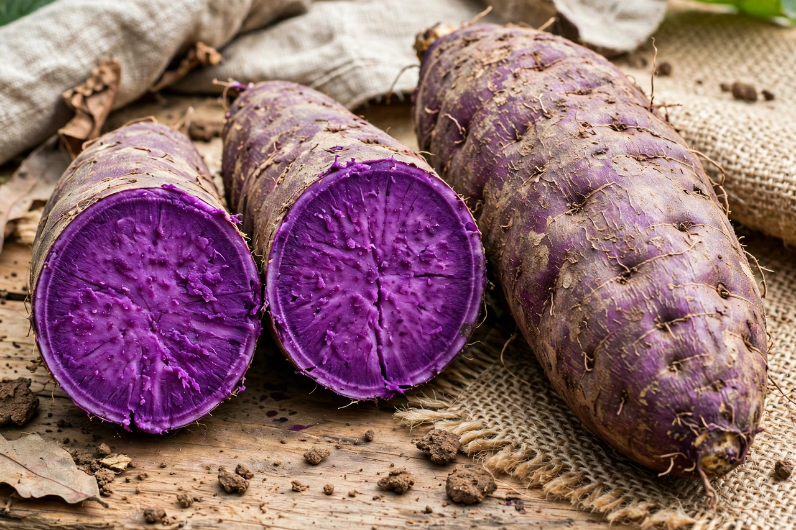

Ube (Dioscorea alata), also known as the purple yam, greater yam, or water yam, is a species of yam native to Southeast Asia and widely cultivated throughout the tropics. Its tubers are notable for their vivid purple flesh, caused by anthocyanin pigments. In the Philippines, ube is a beloved ingredient in desserts, and its striking violet colour and mildly sweet, nutty, vanilla-like flavour have made it an international food trend.
| Ube | |
|---|---|
 | |
| Scientific name | Dioscorea alata |
| Family | Dioscoreaceae |
| Origin | Southeast Asia |
| Common names | Purple yam, greater yam, winged yam |
Dioscorea alata is a vigorous climbing vine with winged stems, grown for its large underground tubers, which can weigh several kilograms. It was one of the earliest cultivated yam species and spread with Austronesian voyagers across the Pacific. It is distinct from the purple-fleshed Okinawan sweet potato (a true sweet potato, Ipomoea batatas) and from taro, with which it is sometimes confused.
In Philippine cuisine, ube is cooked and mashed with milk, sugar, and butter into ube halaya (purple yam jam), which is eaten as a dessert and used as a filling and topping. Ube flavours halo-halo (the shaved-ice dessert), ice cream, cakes, pastries such as ube pandesal and ensaymada, and rice cakes. Since the 2010s, ube has surged in popularity in the United States and elsewhere, appearing in doughnuts, lattes, cheesecakes, and soft-serve ice cream, driven in part by its photogenic colour on social media. Demand has at times outstripped supply, since the yam is slow-growing and mostly produced in the Philippines.